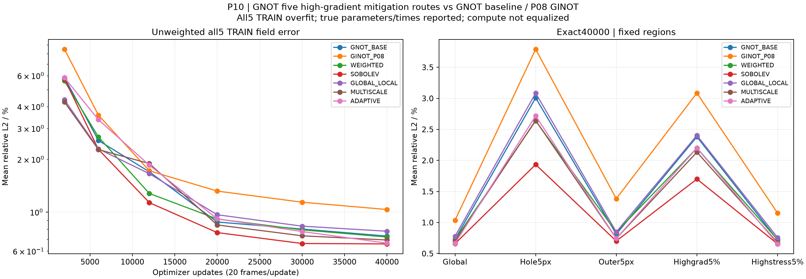
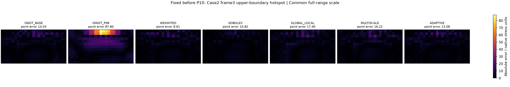
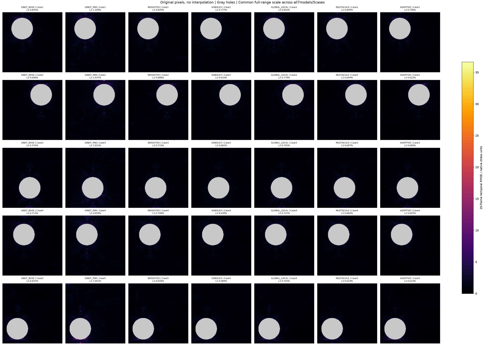
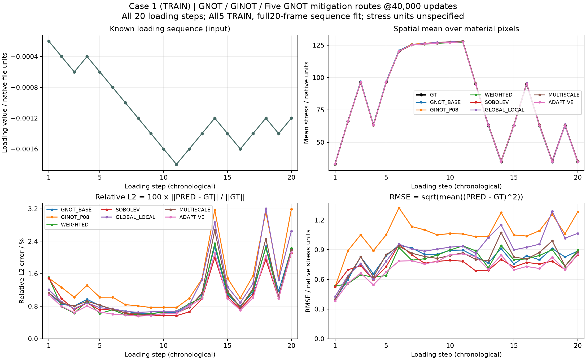
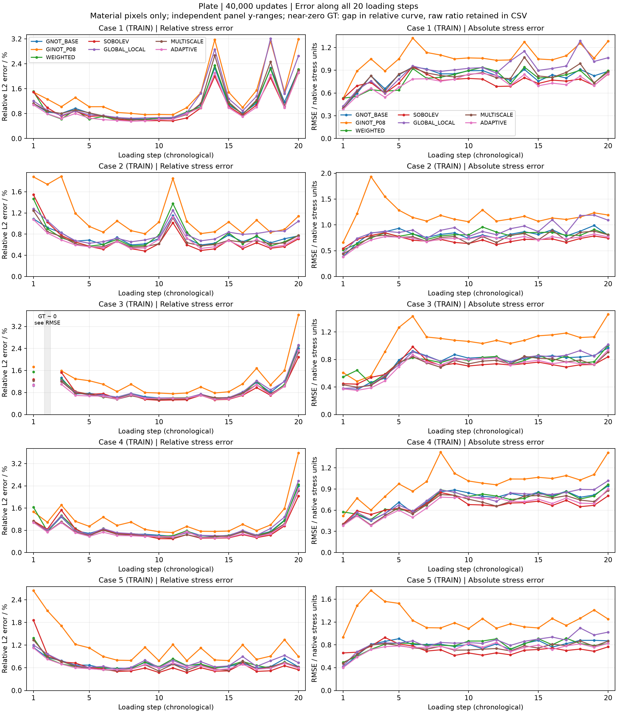

P10 / GNOT FIVE HIGH-GRADIENT MITIGATION ROUTES
GNOT · 应力集中与高梯度五路线
五组各完成40000步5例全部用于训练，无validation/test；每次更新监督一个完整case的20帧，各40000更新。原始材料像素，GT不修改，不插值或平滑。这是overfit能力实验，不能据此声称泛化或工程安全验证。
固定40000步 · 全局与局部一起比较
所有表头可点击排序。区域由同一GT/几何固定定义；全部指标为未加权评估，不用训练损失大小比较不同目标。相对L2是100×‖PRED−GT‖/‖GT‖，五例等权平均。
| 模型 | 参数 | 全场L2 % | 孔边5px L2 % | 外边界5px L2 % | 高梯度5% L2 % | 高应力5% L2 % | 梯度L2 % | 平均绝对峰值偏差 % | 最大单点绝对误差 |
|---|---|---|---|---|---|---|---|---|---|
| GNOT_BASE | 980,964 | 0.7304 | 3.0088 | 0.8127 | 2.3809 | 0.7203 | 48.7839 | 1.1369 | 25.0750 |
| GINOT_P08 | 996,029 | 1.0354 | 3.7912 | 1.3840 | 3.0853 | 1.1530 | 51.7953 | 2.9052 | 87.7962 |
| WEIGHTED | 980,964 | 0.7215 | 2.6387 | 0.8447 | 2.1993 | 0.7243 | 48.1640 | 1.0956 | 24.6959 |
| SOBOLEV | 980,964 | 0.6592 | 1.9341 | 0.7016 | 1.7005 | 0.6558 | 38.4524 | 0.7280 | 14.9226 |
| GLOBAL_LOCAL | 990,520 | 0.7784 | 3.0847 | 0.8492 | 2.4044 | 0.7586 | 49.3329 | 1.1322 | 33.4324 |
| MULTISCALE | 984,932 | 0.6938 | 2.6446 | 0.7431 | 2.1334 | 0.6773 | 47.7949 | 1.0368 | 23.0727 |
| ADAPTIVE | 980,964 | 0.6655 | 2.7172 | 0.7440 | 2.1996 | 0.6562 | 47.9786 | 0.9520 | 22.3376 |

区域、峰值和梯度指标定义
{
"regions": "Static geometry/GT-only masks: hole5=distance to hole<=5px;outer5=outer boundary distance<5px;high-gradient5=top5% material pixels by max-over20 absolute valid adjacent difference;high-stress5=top5% by max-over20 absGT. No hole-crossing gradients.",
"relative_L2": "100*norm(pred-GT)/norm(GT), unweighted; arithmetic mean over5cases",
"gradient_relative_L2": "Valid material adjacent differences, both directions; norm error divided by GT difference norm",
"peak_bias": "Per nonzero-GT frame max predicted stress vs max GT overmaterial; averaged absolute relative bias, locations may differ",
"fixed_hotspots": "Chosen before P10 from P08 diagnosis, not optimized on new models; all5 are TRAIN",
"scope": "All5TRAIN overfit; same data/seed/updatebudget, different objectives/compute; literature-inspired adaptations, not paper reproductions"
}与P09 GINOT对应路线并列
| 路线 | GNOT全场L2 % | GINOT全场L2 % | GNOT高梯度区L2 % | GINOT高梯度区L2 % |
|---|---|---|---|---|
| WEIGHTED | 0.7215 | 1.1737 | 2.1993 | 2.7956 |
| SOBOLEV | 0.6592 | 1.3532 | 1.7005 | 2.2097 |
| GLOBAL_LOCAL | 0.7784 | 1.1354 | 2.4044 | 3.2590 |
| MULTISCALE | 0.6938 | 1.0049 | 2.1334 | 3.0315 |
| ADAPTIVE | 0.6655 | 0.9077 | 2.1996 | 2.6687 |
三种损失路线使用相同常数；局部和多尺度分支按各自架构适配，不是同一结构。全部为五例TRAIN，不作泛化结论。
五条独立路线与预算
Sobolev组因外部中断续训；有效时间剔除停机等待，包含恢复构造与周期评估/保存。原始UTC跨度另存JSON，不用于速度比较。
| 路线 | 本次实现 |
|---|---|
| WEIGHTED | Fixed bounded train-GT weights:1+4exp(-holeDistance/5)+4clip(abs-neighbor-gradient/q95,0,1)+2clip(absGT/q95,0,1); normalize per case mean=1 |
| SOBOLEV | Global MSE +0.1*(mean squared adjacent material-edge gradient error / common all5 GT gradient energy); no edge crosses a hole |
| GLOBAL_LOCAL | Original GNOT plus gated local residual, global full-field input and MSE retained; no cropping global input |
| MULTISCALE | Same-weight global and16/64-window GNOT streams with Fourier coordinate injection; ordinary MSE; not equal compute |
| ADAPTIVE | MSE warmup2000; then bounded dynamic weights1+4clip(EMA squared residual / per-case EMA mean,0,1); normalize mean1; EMA.95 updated only using existing training forwards; no extra inference |
全部沿用原GNOT的8层、hidden64、8头、2experts配置。三种损失路线逐字复用原GNOT纯未训练initial.pt；局部和多尺度组也逐tensor复用全部GNOT未训练主干，再分别增加零初始输出的局部分支或零初始Fourier投影。不加载任何已训练权重。三组980964参数；局部990520、多尺度984932参数。相同seed20261111、AdamW3e-4/wd0/clip1、after-update6000/12000降LR、FP32/TF32无AMP、batch1、归一化、case轮换和checkpoint100。梯度损失是匹配GT差分，不是惩罚梯度变小。只在材料内部相邻像素计算差分。
多尺度组共享8个GNOT block权重，使用全局和局部窗口两条流；局部窗口16×16与64×64交替，最后逐点融合，不做像素插值；另加62→64的Fourier坐标投影，频率1..256，计算量增加。局部组保留全局输入和全场MSE，在距材料边界12像素以内增加128→64→20的局部残差分支。五条为文献启发的适配实现，不是五篇论文原样复现；不称等FLOPs。
| 模型 | 有效训练过程 / min | 最终评估输出 / s | TRAIN-best步数 |
|---|---|---|---|
| GNOT_BASE | 沿用旧结果 | - | - |
| GINOT_P08 | 沿用旧结果 | - | 40000 |
| WEIGHTED | 69.73 | 1.36 | 40000 |
| SOBOLEV | 70.88 | 1.26 | 40000 |
| GLOBAL_LOCAL | 70.42 | 1.29 | 40000 |
| MULTISCALE | 113.95 | 1.44 | 40000 |
| ADAPTIVE | 70.60 | 1.54 | 40000 |
保存预测 · GT / Prediction / 两种误差
加载中…
Prediction
Pointwise relative error (%)
Absolute error
点击原始像素查看数值
GT与预测共用色标；孔洞灰色；逐点相对误差为100×|PRED−GT|/|GT|，GT=0时未定义。另列绝对误差，单位沿用数据文件。
局部热点与空间误差

全部5例、7模型、全20帧空间RMSE

热点由P08诊断在P10训练前选定。单点改善不代表整体改善；也不证明原GT边界突变的物理正确性。
逐Case加载曲线 · 固定40000步
矢量图
五例合并曲线 · 全部TRAIN
GT接近零时相对曲线留空，原始比值和绝对RMSE保留CSV。
